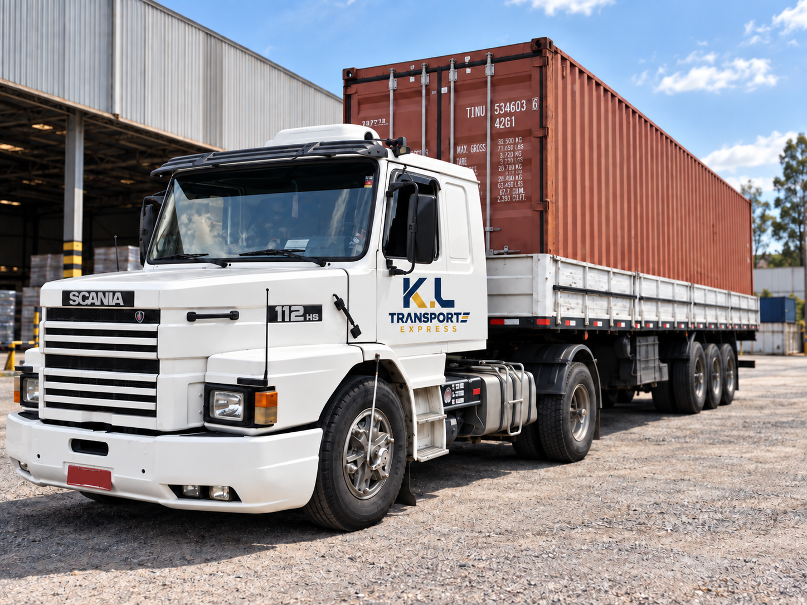

Carga leve ou média
Utilitários e furgões podem atender mercadorias, caixas, peças e equipamentos.
TRANSPORTE DE CARGAS
A K.L atende operações com diferentes tipos de veículos, de utilitários e furgões a caminhões e carretas, conforme carga, rota, disponibilidade e necessidade do cliente.

QUANDO FAZ SENTIDO
A K.L avalia rota, tipo de carga, dimensões, peso e disponibilidade para direcionar o veículo adequado à operação.
Utilitários e furgões podem atender mercadorias, caixas, peças e equipamentos.
Van e furgão oferecem mais espaço para operações que exigem compartimento fechado.
Caminhão e carreta entram em operações maiores, conforme rota, carga e disponibilidade.
ATENDIMENTO
COMO FUNCIONA
O orçamento depende das características reais da operação. Por isso, a K.L confirma as informações antes de direcionar o atendimento.
Informe carga, peso, dimensões e cuidados especiais quando aplicável.
A rota ajuda a avaliar veículo, disponibilidade e condição do transporte.
Após a cotação e confirmação, a K.L direciona a operação.
CAMPINAS E REGIÃO
Localização estratégica para coletas e entregas na região, com acesso rápido às principais vias. A operação também atende cidades próximas, interior de São Paulo e outros destinos sob consulta.
R. Dr. Gastão da Rocha Leão, 683 — Cidade Jardim, Campinas-SP Ver a K.L no Google ↗DÚVIDAS FREQUENTES
Informações rápidas para facilitar a cotação.
A operação pode envolver utilitários, Fiorino, picape, van, furgão, caminhão ou carreta, conforme a necessidade do transporte.
Sim. Além de Campinas e região, a K.L realiza rotas intermunicipais e outros destinos sob consulta.
Sim. A K.L atende transporte dedicado, com veículo direcionado à coleta e entrega contratada, conforme necessidade e disponibilidade.
A K.L avalia tipo de mercadoria, peso, dimensões, origem, destino e características da operação antes de confirmar a solução.
COTAÇÃO
Envie origem, destino, mercadoria e, quando aplicável, peso e dimensões. A K.L avalia a necessidade e confirma a condição do serviço.